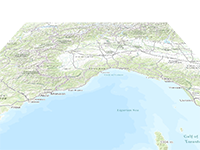

Example of animated reset camera rotation.
Requirement: Tileset Control
Allow Camera Control - ON
Allow Camera Control - ON
Usage instructions:
Add this script to map GameObject.
Add this script to map GameObject.
ResetCameraRotationExample.cs
/* INFINITY CODE 2013-2016 */
/* http://www.infinity-code.com */
using UnityEngine;
namespace InfinityCode.OnlineMapsExamples
{
[AddComponentMenu("Infinity Code/Online Maps/Examples (API Usage)/ResetCameraRotationExample")]
public class ResetCameraRotationExample : MonoBehaviour
{
/// <summary>
/// Time of animation (sec).
/// </summary>
public float animationTime = 3;
/// <summary>
/// Animation Curve.
/// </summary>
public AnimationCurve animationCurve = AnimationCurve.EaseInOut(0, 0, 1, 1);
private float time;
private bool isReset;
private float camX;
private float camY;
private OnlineMapsTileSetControl control;
private void OnGUI()
{
if (GUI.Button(new Rect(5, 5, 100, 30), "Reset") && !isReset)
{
camX = control.cameraRotation.x;
camY = control.cameraRotation.y;
isReset = true;
}
}
private void Start()
{
control = OnlineMapsTileSetControl.instance;
}
private void Update()
{
if (!isReset) return;
time += Time.deltaTime;
float t = time / animationTime;
if (t >= 1)
{
time = 0;
isReset = false;
t = 1;
}
float f = animationCurve.Evaluate(t);
control.cameraRotation.x = Mathf.Lerp(camX, 0, f);
control.cameraRotation.y = Mathf.Lerp(camY, 0, f);
}
}
}